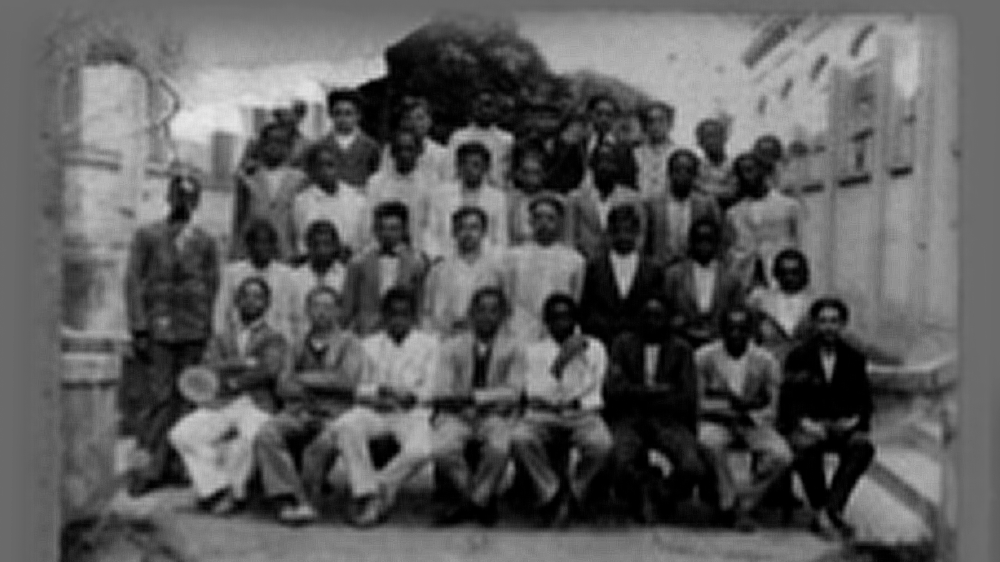
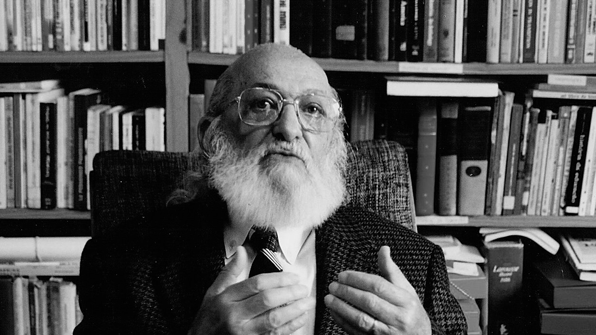
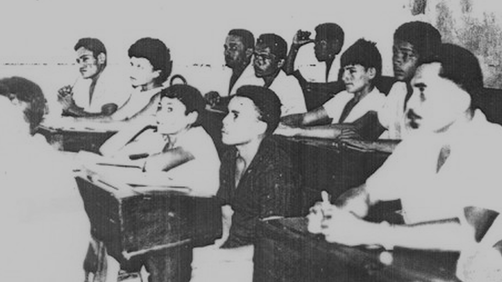
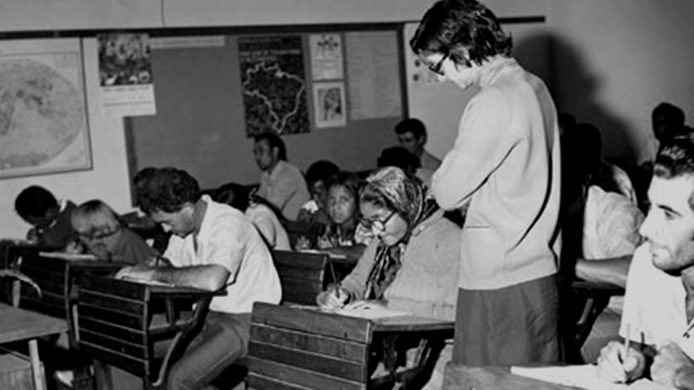
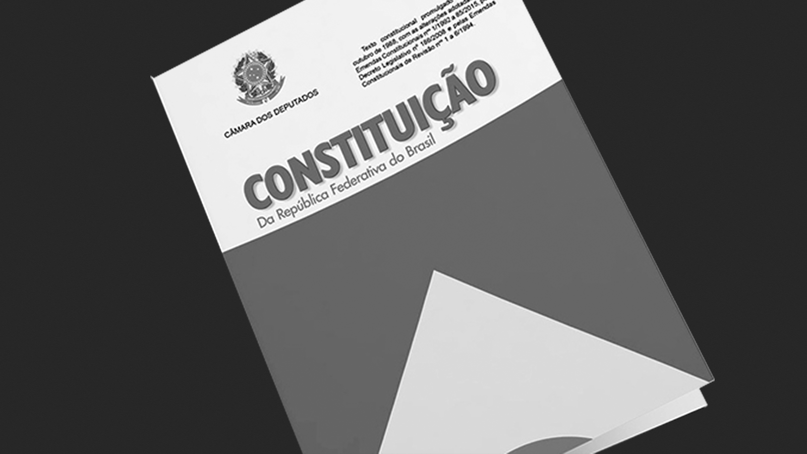

Atualizando o conceito: a EJA hoje
Convém explicitar logo de início o que entendemos por educação de jovens e adultos, uma vez que em diferentes países e regiões do mundo o conceito engloba práticas formativas diversas (...) O campo focaliza as pessoas jovens, adultas e idosas pertencentes aos estratos sociais de baixa renda, cujo direito à educação foi violado na infância ou adolescência em virtude de preconceitos, de ausência ou distância de escolas, de trabalho precoce e frequência breve ou descontínua a instituições de ensino de má qualidade, onde não tiveram êxito na aprendizagem, realizando percursos acidentados, marcados por reprovações e abandonos; esses jovens procuram alternativas de reinserção no sistema educativo e aceleração de estudos. Compreende ainda as pessoas jovens e adultas que interromperam os estudos nos níveis obrigatórios à sua época (o antigo primário ou ensino fundamental) e que buscam nivelar sua escolaridade no patamar requerido pelo mercado de trabalho e garantido pela legislação atual às novas gerações (o ensino médio).”
Maria Clara di Pierro – Formação e Práticas na Educação de Jovens e Adultos (pags.11/12)
Ação Educativa (2017)
Módulos
Clique nos itens abaixo para visualizar os módulos.
A construção da identidade contemporânea da EJA no Brasil é profundamente marcada pelos fóruns e conferências internacionais promovidas pela UNESCO a partir dos anos 1990 e pela defesa da educação como direito humano que remonta ao pensamento e às experiências de Paulo Freire a partir dos anos 1960.
A história da EJA no país, porém, é muito anterior a esse período e o levantamento de iniciativas da sociedade civil ou governamentais nos remetem a experiências como as da Sociedade Beneficente Luís Gama, fundada em 18 de maio de 1888 (5 dias após a assinatura da abolição da escravatura), em Campinas, ou da Frente Negra Brasileira nos anos 1930, ambas dedicadas à educação da população negra ou iniciativas governamentais como o Mobral (1967-1985) que durante o período de ditadura militar realizou campanha direcionada à “erradicação do analfabetismo”.
Atualmente, o direito de todos à educação por toda vida é reconhecido como direito constitucional e a especificidade da modalidade de ensino é garantida em legislação específica.
O desafio do acesso, permanência e qualidade da EJA é imenso, porém com dispositivos legais e marcos conceituais bem mais próximos da realidade e das necessidades de aprendizagem de seus sujeitos.
Educação de pessoas jovens e adultas
Linha do tempo
1888 - Sociedade Beneficente Luís Gama
Em 18 de maio de 1888, apenas cinco dias após a abolição, foi fundada a Sociedade Beneficente Luís Gama, em Campinas. Com proposta de amparo social, a entidade abriu um “colégio” com cursos para a educação de adultos trabalhadores, no período noturno, e para jovens, no diurno. Depois de muitas dificuldades, o “colégio” encerrou suas atividades na metade da década de 1890 (Maciel, 1997, p. 75). Em 1902, um professor negro daquela cidade, Francisco José de Oliveira, criou o “colégio” São Benedito para alfabetizar os filhos dos negros e mulatos. Cerca de um ano depois, o jornal O Baluarte informava acerca do curso preparatório, do intermediário e do exame de fim de ano do referido colégio (O Baluarte, 17 dez. 1903, p. 4). Em 1907, havia 272 alunos matriculados, dos quais 124 eram filhos de imigrantes e 14 nada pagavam. Em 1908, chegou a reunir 422 alunos. Em 30 de abril de 1910, o colégio foi incorporado à Federação Paulista dos Homens de Cor (Domingues, 2004, p. 352).
1960 - Paulo Freire e a Educação Popular
Paulo Freire nasceu em 1921 em Recife, numa família de classe média. Formou-se em direito, mas não seguiu carreira, encaminhando a vida profissional para o magistério. Suas ideias pedagógicas se formaram da observação da cultura dos alunos – em particular o uso da linguagem – e do papel elitista da escola. Em 1963, em Angicos (RN), chefiou um programa que alfabetizou 300 pessoas. No ano seguinte, o golpe militar o surpreendeu em Brasília, onde coordenava o Plano Nacional de Alfabetização do presidente João Goulart. Freire passou 70 dias na prisão antes de se exilar. Em 1968, no Chile, escreveu seu livro mais conhecido, Pedagogia do Oprimido. Também deu aulas nos Estados Unidos e na Suíça e organizou planos de alfabetização em países africanos. Com a anistia, em 1979, voltou ao Brasil, integrando-se à vida universitária. Foi nomeado doutor honoris causa em 28 universidades em vários países e teve obras traduzidas em mais de 20 idiomas. Morreu em 1997, de parada cardíaca. Fundamentada no referencial teórico-metodológico freireano, compreende-se a educação popular como uma concepção de educação realizada por meio de processos contínuos e permanentes de formação, direcionados à transformação da realidade a partir do protagonismo dos sujeitos.
1960 - MEB: Movimento de Educação de Base
O Movimento de Educação de Base (MEB) foi idealizado pela Igreja Católica com propósito de atuar, frente à população rural, na promoção humana por meio da educação popular, mas sem objetivos explicitamente catequéticos. A alfabetização de adultos seria realizada através da rede de emissoras católicas que serviriam de escolas radiofônicas para transmissão dos conteúdos alfabetizadores, repassado para milhões de pessoas que acompanhavam as aulas no início da noite em áreas do Norte, Nordeste e Centro-Oeste do Brasil. Voltado para alfabetização da população rural, tinha como proposta promover uma educação de base que levasse o homem a refletir sobre seus valores pessoais, morais e cívicos engajando-o no preparo para as reformas básicas – tais como a reforma agrária e ajudando-o a defender-se de ideologias incompatíveis com o espírito cristão da nacionalidade (FAVERO, 2006, p. 56).
Vídeo – Fóruns de EJA entrevista com Osmar Fávero1967 - MOBRAL
Instituído pela Lei 5.379, de 15 de dezembro de 1967, no governo do presidente Arthur da Costa e Silva, atuou nesse primeiro momento apenas como órgão de assistência financeira e técnica às iniciativas de alfabetização de jovens e adultos. A partir de 1970 é reformulado, iniciando sua programação com o Decreto n° 1.124 de 8 de setembro. O Mobral tinha o intuito de alfabetizar adolescentes e adultos e em um período tido como breve – dez anos – erradicar o analfabetismo do país e se sobressair diante do peso do fracasso de dezenas de programas anteriores. Buscava-se atender a população urbana entre 15 e 35 anos, caracterizada pela faixa etária de pessoas que atenderia a demanda por mão de obra. Podemos aproximar essa posição ao que frisa Jannuzzi (1979), estando a prioridade não em proporcionar educação de qualidade, mas em suprir as necessidades da industrialização, afinal, nota-se que nesse período o país estava sob as perspectivas otimistas do “milagre econômico”.
Saiba mais sobre o mobral1988 - Constituição
A Constituição Federal de 1988 garantiu pela primeira vez, no plano legal, o direito ao ensino fundamental gratuito, inclusive aos que não tiveram na idade própria, incluindo, portanto, jovens, adultos e idosos. A Constituição afirma ainda que “o acesso ao ensino obrigatório e gratuito é direito subjetivo” e que “o não oferecimento do ensino obrigatório pelo poder público, ou sua oferta irregular, importa responsabilidade da autoridade competente”.
Clique aqui1996 - Lei de Diretrizes e Bases da Educação - Lei nº 9.394 de 20 de dezembro de 1996
Estabelece:
VII – Oferta de educação escolar regular para jovens e adultos, com características e modalidades adequadas às suas necessidades e disponibilidades, garantindo-se aos que forem trabalhadores as condições de acesso e permanência na escola [...].
1997 - AlfaSol: Alfabetização Solidária
O Programa Alfabetização Solidária foi criado em 1997 no âmbito do Programa Comunidade Solidária fundado pela antropóloga Ruth Cardoso, esposa do Presidente Fernando Henrique Cardoso. Implantado em municípios do Norte e do Nordeste e em grandes centros urbanos, tinha por objetivo reduzir o analfabetismo nas localidades com menor IDH. Funcionava a partir do estabelecimento de “parcerias” com Instituições de Educação Superior (IES) que selecionavam e ofereciam formação inicial para coordenadores e alfabetizadores entre os moradores com maior escolaridade para ministrar aulas de alfabetização em cursos com duração de um semestre. O Programa era financiado com recursos advindos de doações de empresas e de cidadãos (da campanha “adote um aluno”) e com fundos governamentais. Após a finalização do Programa se tornou a ONG AlfaSol, atuante ainda hoje.
2000 – Diretrizes Nacionais para a Educação de Jovens e Adultos
As Diretrizes Curriculares Nacionais para a EJA abrangem os processos formativos da Educação de Jovens e Adultos como uma das modalidades da Educação Básica nas etapas dos ensinos fundamental e médio, nos termos da LDBEN 9394/96.
Resolução CNE/CEB nº 1, de 5 de julho de 2000.
Parecer do Conselho Nacional de Educação estabelecendo fundamentos e funções da EJA.
Temos o direito de ser iguais quando a nossa diferença nos inferioriza; e temos o direito de ser diferentes quando a nossa igualdade nos descaracteriza. Daí a necessidade de uma igualdade que reconheça as diferenças e de uma diferença que não produza, alimente ou reproduza as desigualdades.”
Boaventura de Souza Santos, 1997
Breve histórico dos Direitos Humanos
Passe o mouse sobre os cards abaixo para saber mais.
1ª Geração
Direitos civis
Os direitos civis referem-se às liberdades individuais, como o direito de ir e vir e de dispor do próprio corpo.
2ª Geração
Direitos econômicos, sociais e culturais
Incluem o direito à educação, o direito a alojamento adequado, à comida, à água, a condições dignas de trabalho e ao usufruto dos mais elevados padrões de prestação de cuidados de saúde físicos e mentais.
3ª Geração
Direito à diversidade
Refere-se ao direito ao desenvolvimento, à paz e a valores culturais próprios = Diversidade.
4ª Geração
Direitos ambientais
Conjunto de princípios jurídicos e de normas jurídicas voltado à proteção jurídica da qualidade do meio ambiente.
Características dos Direitos Humanos
Desafios dos Direitos Humanos e a educação das pessoas jovens e adultas
Todos e todas têm direitos – A educação como um direito humano
A qualidade social da educação, quando considerada como um direito humano, está vinculada às dimensões da adaptabilidade e da aceitabilidade (TOMASEVSKI, 2001).
A adaptabilidade requer que todas as condições de ensino e aprendizagem sejam formuladas e concretizadas com base nas necessidades dos educandos. A aceitabilidade se relaciona aos consensos estabelecidos em torno da função social da educação, que deve ser ofertada de maneira a corresponder às expectativas que a sociedade lhe confere. No caso da educação de jovens e adultos, em que pesem os avanços formais que apontam para a satisfação da adaptabilidade e aceitabilidade desta modalidade de ensino, diferentes estudos apontam para a permanência da reprodução, precarizada, da educação ofertada às crianças e adolescentes (OLIVEIRA, 2007; ALBUQUERQUE, 2008, entre outros).
Desafio atual da EJA como direito humano: juvenilização
Quem são os/as jovens da EJA?
- Os que estão em defasagem idade/série
- Os que têm histórico de repetências
- Jovens trabalhadores(as) das camadas mais pobres
- Os que enfrentam a falta de reconhecimento das culturas juvenis na escola
- Os que vivenciaram na trajetória escolar racismo, homofobia, transfobia e machismo
Para saber mais
Fora de série (documentário)
Um filme dentro de uma pesquisa, ou vice-versa. Fora de série, documentário produzido pelo Observatório Jovem do Rio de Janeiro, é um filme de pesquisa com estudantes do ensino médio da Educação de Jovens e Adultos (EJA) de 13 escolas públicas do Rio de Janeiro. Nele os jovens narram percursos de vida e contam histórias sobre seus relacionamentos com a escola. Os relatos apresentam desafios que envolvem o processo da formação escolar e revelam suportes e apoios encontrados dentro e fora da escola para concluir o ensino médio.
Clique aqui para saber mais.Nunca me sonharam (documentário)
Nunca me sonharam nos convida ao diálogo sobre a realidade do ensino médio nas escolas públicas do Brasil. Na voz de estudantes, gestores, professores e especialistas, o filme questiona: como nós, enquanto sociedade, estamos cuidando e valorizando a qualidade da educação oferecida aos jovens na fase mais sensível e transformadora de suas vidas?
Clique aqui para saber mais.Educação de pessoas jovens e adultas e direitos humanos
Direitos, diversidade, práticas e experiências educativas na Educação de Jovens e Adultos, de Mariângela Graciano e Rosário S. Genta Lugli (organizadoras) – Editora Alameda/2017.
Clique aqui para saber mais.
“Parágrafo único:
- Como modalidade (...) da Educação Básica, a identidade própria da Educação de Jovens e Adultos considerará as situações, os perfis dos estudantes, as faixas etárias e se pautará pelos princípios de equidade, diferença e proporcionalidade na apropriação e contextualização das diretrizes curriculares nacionais e na proposição de um modelo pedagógico próprio, de modo a assegurar:
- I - quanto à equidade, a distribuição específica dos componentes curriculares a fim de propiciar um patamar igualitário de formação e restabelecer a igualdade de direitos e de oportunidades face ao direito à educação;
- II - quanto à diferença, a identificação e o reconhecimento da alteridade própria inseparável dos jovens e dos adultos em seu processo formativo, da valorização do mérito de cada qual e do desenvolvimento de seus conhecimentos e valores;
- III - quanto à proporcionalidade, a disposição e alocação adequadas dos componentes curriculares face às necessidades próprias da Educação de Jovens e Adultos com espaços e tempos nos quais as práticas pedagógicas assegurem aos seus estudantes identidade formativa comum aos demais participantes da escolarização básica.”
Diretrizes Curriculares Nacionais para a Educação de Jovens e Adultos – CNE/CEB nº 1 – 05.07.200
Marcos legais da EJA
Constituição Federal - 1988
A República Federativa do Brasil, formada pela união indissolúvel dos Estados e Municípios e do Distrito Federal, constitui-se em Estado Democrático de Direito promulga a seguinte constituição,
Clique aquiLei de Diretrizes e Bases da Educação - 1996
A educação abrange os processos formativos que se desenvolvem na vida familiar, na convivência humana, no trabalho, nas instituições de ensino e pesquisa, nos movimentos sociais e organizações da sociedade civil e nas manifestações culturais.
Clique aquiDiretrizes Nacionais para Educação de Jovens e Adultos - 2000
Diretrizes Nacionais para Educação de Jovens e Adultos - 2000
Clique aquiParecer do Conselho Nacional de Educação - 2000
Em 10 de maio de 2000 é aprovado o Parecer CNE 11/2000 que trata das Diretrizes Curriculares Nacionais para a Educação de Jovens e Adultos, sob a coordenação do Relator Conselheiro Carlos Roberto Jamil Cury.
Clique aqui
Para saber mais
Filme: Narradores de Javé (2001)
O filme “Narradores de Javé” foi dirigido por Eliane Caffé e lançado em 2001. Rodado na cidade de Gameleiro da Lapa (BA), o longa-metragem narra a história de uma localidade chamada Javé prestes a ser destruída para a construção de uma Usina Hidroelétrica.
Para evitar a destruição de sua cidade os habitantes decidem escrever a história da localidade visando pleitear o status de patrimônio histórico e cultural do país, porém se deparam com o fato de que a maioria dos habitantes de Javé é analfabeta e por esta razão não possuem nenhum relato histórico documentado. Antonio Biá, um dos únicos moradores alfabetizado é incumbido de colher e registrar os relatos dos moradores.
Clique aqui para ver o trailer.
A construção de uma proposta de organização curricular deve considerar os marcos legais da modalidade que se articulam com a cultura e o perfil dos sujeitos jovens e adultos das localidades atendidas. Alguns fundamentos devem ser considerados na construção de uma proposta adequada às necessidades de aprendizagem e de atendimento cidadão aos jovens, adultos e idosos:
- considerar o direito humano à educação;
- assegurar a equidade educativa;
- considerar o mundo do trabalho como temática central;
- garantir a qualidade da aprendizagem dos jovens e adultos;
- abordar temas significativos para o universo juvenil e adulto.
Fundamentos da EJA e suas implicações
Implicações
- Adotar uma perspectiva contextualizada para a organização do ensino e seleção de conteúdos.
- Abordar temas relevantes para as pessoas jovens e adultas das comunidades atendidas.
Desdobramentos na perspectiva racial
- Afirmação do caráter multirracial e pluriétnico da sociedade brasileira.
- Reconhecimento da presença negra nas salas de aula e no território.
- Aprofundamento do conhecimento acerca das diferentes culturas presentes nas salas de aula da EJA e no território.
- Desconstrução da ideia de hierarquia entre culturas.
- Proposição de processos pedagógicos que privilegiam a interação, reflexão e valorização das diferenças.
Implicações
Aprofundar o conhecimento relativo ao universo e relações de trabalho na história da humanidade e nas suas peculiaridades locais.
Desdobramentos na perspectiva racial
Reflexão acerca do processo de transição do trabalho escravo para remunerado, destacando as implicações históricas para as relações raciais e indicadores sociais no Brasil atual.
Implicações
- Construir processo de formação inicial e continuada, específico para educadores e gestores da EJA.
- Adequar equipamentos, espaço físico e rotina escolar às necessidades das pessoas jovens e adultas.
Desdobramentos na perspectiva racial
- Inclusão no processo de formação dos professores de reflexões acerca das diferentes trajetórias e de enfrentamentos cotidianos vivenciados por alunos e alunas no tocante a relações raciais dentro e fora da escola.
- Atenção constante à representação equilibrada e livre de estigmatizações das diferentes raças no ambiente escolar, materiais didáticos e atividades propostas.
- Promoção do conhecimento sobre a África e africanidades brasileiras em suas múltiplas abordagens.
Implicações
- Tendências atuais do mundo do trabalho.
- Relações étnico-raciais.
- Relações de gênero e direitos da mulher.
- Meios de informação e comunicação.
- Cidadania e participação.
Desdobramentos na perspectiva racial
- Inclusão no processo de formação dos professores de reflexões acerca das diferentes trajetórias e de enfrentamentos cotidianos vivenciados por alunos e alunas no tocante a relações raciais dentro e fora da escola.
- Atenção constante à representação equilibrada e livre de estigmatizações das diferentes raças no ambiente escolar, materiais didáticos e atividades propostas.
- Promoção do conhecimento sobre a África e africanidades brasileiras em suas múltiplas abordagens.
Implicações
- Tendências atuais do mundo do trabalho.
- Relações étnico-raciais.
- Relações de gênero e direitos da mulher.
- Meios de informação e comunicação.
- Cidadania e participação.
Desdobramentos na perspectiva racial
- Manutenção de acervo e recursos adequados para a abordagem das questões étnico-raciais incluindo livros, periódicos, filmes e jogos, para alunos/as e professores/as.
- Organização de debates e atividades direcionadas ao enfrentamento do racismo e desigualdades sociais no Brasil e na localidade.
- Abordagem da cultura negra em suas múltiplas manifestações como patrimônio histórico, ambiental, econômico, político e cultural.
- Análise crítica e constante da representação das diferentes raças nos meios de informação e comunicação.
Implicações
Promover aprendizagens que permitam às pessoas jovens e adultas a participação plena na sociedade.
Desdobramentos na perspectiva racial
- Incentivo à participação da comunidade escolar nas lutas antirracistas.
- Promoção da reflexão coletiva sobre o papel do racismo na construção das desigualdades educacionais no Brasil.
- Reconhecimento de todos os alunos e alunas da EJA como sujeitos de conhecimento e aprendizagem, rompendo o estigma histórico dos estudantes negros como menos capacitados.
- Reconhecimento da EJA como espaço de reivindicação de direitos educativos, problematização de experiências, valorização, construção e transformação de conhecimentos.
Iniciativa

Realização

Parceiros investidores